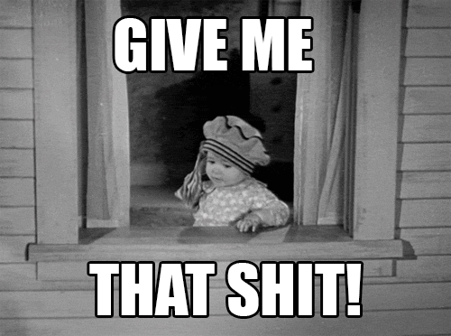

Ziele sind der Kompass unseres Lebens. Sie bestimmen unsere Richtung und helfen uns sicher durch stürmische Phasen des Lebens zu navigieren. Die Erkenntnis, dass wir Ziele benötigen, ist aber nur der erste Schritt. Wenn wir wachsen wollen, dann brauchen wir richtige Ziele und müssen diese von Falschen unterscheiden.
Warum sind Ziele notwendig?
„Man sollte vor allem in sich selber investieren. Das ist die einzige Investition die sich tausendfach auszahlt.“ - Warren Buffett
Persönlichkeitsentwicklung ist ein bisschen wie Raketenphysik. Sie ist schwierig in der Umsetzung, konfrontiert uns konstant mit Fehlschlägen und wenn wir es falsch angehen, wird am Ende alles explodieren. Klingt nach jeder Menge Spaß, nicht wahr?
Glücklicherweise ist beides erschreckend simpel. Wir benötigen nur Motivation/Treibstoff, ein Ziel/Koordinate und Zeit. Diese Kombination ist der Grundstein seinem Leben eine Richtung zu geben und wie eine Rakete in den Horizont deiner Zukunft zu fliegen.
Ohne Ziele können wir nicht wachsen
Von Kindesalter bis ungefähr zu unserem Teenager-Alter, werden uns Ziele von außen gesetzt. Eltern und Lehrer sagen uns was wir zu tun und zu lassen haben. Sie schicken uns in eine Richtung auf die wir keinen Einfluss und auch keinen Plan haben. Statt dankbar für die Unterstützung zu sein, tun wir, was Kinder ebenso tun. Wir fühlen uns ungerecht behandelt. Die Notwendigkeit von Zielen wird uns erst sehr viel später bewusst, wenn wir unseren eigenen Weg finden müssen. Die ersten Schritte im Leben mögen erzwungen sein, doch nur durch sie sind wir in der Lage in unserem Leben eigenständige Schritte zu vollziehen, komplett ohne Zwang von außen. Einfach weil wir es wollen.
Egal wie wichtig der Anstoß in der Kindheit durch die eigenen Eltern war, die negativen Gefühle bleiben meist hängen. Statt Ziele als Antrieb zu sehen, der für unser Wachstum notwendig ist, sehen wir sie als Zwang, Druck und Willkür. Doch was passiert, wenn wir uns unseren kindlichen Emotionen hingeben und uns keine Ziele setzen?
Ziellosigkeit
Ein Leben ohne Ziel lässt sich gut mit einem Luftballon vergleichen, dessen Knoten gerade gelöst wurde. Er bewegt sich zwar, doch statt eine bestimmte Richtung einzuschlagen, irrt er mit Furzgeräuschen unberechenbar durch den Raum. Das mag die Stimmung auf einer Party lockern, jedoch ist es nicht ratsam dies zum Vorbild für sein eigenes Leben zu nehmen. Wenn wir keine festen Ziele verfolgen, dann sind wir wie der Ballon, der ständig die Richtung wechselt und am Ende ratlos und ausgebrannt am Boden liegen bleibt, statt Sinn und Halt im Leben zu finden.
Ein gutes Beispiel dafür bin ich selbst. Schon gefühlt immer hab ich mir nie ein Ziel gesetzt. Mir war alles immer egal. Ich hab einfach das gemacht was andere gesagt haben oder mich an Menschen in meine Umgebung orientiert. Was will ich studieren? Als was soll ich später arbeiten? Was für ein Mensch will ich sein? Was will ich an mir verbessern? All diese Fragen konnte ich mir nicht beantworten bzw. hab ich mir nie gestellt.
Man sollte jedoch nicht in völliger Panik verfallen. Viele haben dieses Problem von Ziellosigkeit obwohl es doch so einfach zu lösen ist.
Wie Ziele richtig gestalten?
Bei Zielen sollte immer beachtet werden, dass sie kurz- und langfristig sein können. Beides ist wichtig für uns, im Folgenden konzentriere ich mich aber vor Allem auf langfristige Ziele. Diese formen unser Leben maßgeblich und geben ihm seine Richtung, weshalb wir sie besonders im Auge behalten sollte.
Die Natur des Ziels
Der Klassiker. Wenn sich deine Ziele um materielle Dinge drehen, dann hast du früher oder später ein Problem. Es ist vollkommen okay, sich über neue Dinge zum flexen zu freuen. Aber man sollte sich nicht darin verlieren. Insbesondere wenn er so tief in unsere Bedürfnisse und Wünsche verwoben ist, dass er anfängt Beziehungen, Gefühle und Gedanken zu beeinflussen. An diesem Punkt kontrollieren wir nicht mehr unser Ziel, sondern unser Ziel uns.
Besser sind Ziele, die sich nicht mit einer ausreichend großen Summe Geld kaufen lassen. Oft sind es Dinge die nicht greifbar und auch nicht im klassischen Sinne besitzbar sind. Es sollte sich um uns und unserer Umwelt befassen. Es sind zum Beispiel Charaktereigenschaften, Beziehungen zu Freunden oder Einstellung auf bestimmte Dinge. Keine Dinge die in uns Gier nach mehr wecken.
Das Ziel muss nicht unbedingt einen guten Abschluss zu haben oder den perfekten Körper. Dein Ziel kann auch einfach sein das du dein Umfeld glücklich machen willst. Sei es die Initiative ergreifen und mit Freunden was neues unternehmen oder lange nicht gesehene Verwandte einen Überraschungsbesuch abzustatten Gute Ziele werden von uns kontrolliert.
Erreichbarkeit des Ziels
Was jetzt kommt, klingt mit sehr hoher Wahrscheinlichkeit nicht unbedingt einleuchtend, aber: Ziele sind nicht dazu da, dass wir sie erreichen,langfristig zumindest. Vielmehr sollten sie als Orientierung dienen um uns bei wichtigen Entscheidungen zu helfen. Ein großes, langfristig und im Moment unnerreichbares Ziel sollte ín viele kleine aufgeteilt werden. Jede Stufe führ uns näher an dieses Ziel. Das hilft uns eine Orientierung zu finden und leichter alltäglicher Entscheidung zu treffen.
Bei guten Zielen geht nicht um das Ende, sondern um den Weg dahin. Lieben wir unseren Weg, finden wir in ihm Erfüllung, fühlen wir uns dabei gut, sind wir glücklich? Auch wenn der Gedanke an unerreichbare Ziele demotivierend klingen mag, sie zwingen uns, uns auf den Weg zu konzentrieren und nicht den Pfad zu verlieren.
Fokus des Ziels
Schlechte Ziele legen ihren Fokus auf unsere äußere Umwelt. Die Perspektive verengt sich auf die Personen, Sachen und Wünsche welche außerhalb von uns existieren und über die wir demnach keine Kontrolle haben. Wir konzentrieren uns
Die logische Konsequenz ist, dass sich gute Ziele auf unser Innerstes beziehen. Die Illusion, dass wir die Kontrolle über Dinge wie Anerkennung, Ruhm und Erfolg hätten kontraproduktiv. Indem wir die Suche nach diesen aufgeben und uns unserem Inneren widmen, erlangen wir wirkliche Kontrolle über unser Leben und so sollten Ziele sich vor allem auf Dinge konzentrieren, die in uns existieren.
Motivation des Ziels
Mein größter Fehler war zweifelsohne die Motivation hinter meinen Zielen. Das Warum will ich das? Das ist der schwierigste Teil daran. Um das herauszufinden muss man tief in sich hineinschauen. Bei der Überlegen sollte man als erstes herausfinden welche schon gesetzte Ziele von außen aufgedrückt wurden. Will ich wirklich die Erwartung meiner Eltern erfüllen und Arzt oder Anwalt werden? Will ich es um meine Eltern zufrieden zu stellen oder ist es mein Traum anderen Menschen zu helfen. Wir sollten uns von diesen aufgezwungen Zielen lösen und auf unser Inneres hören.
Entstammt ein Ziel jedoch aus dir selbst, dann bist du auf dem richtigen Weg. Kein zweiter Mensch ist so wie du und dein bisheriges Leben ist eine einzigartige Aneinanderreihung von Gedanken, Erfahrungen und Eindrücken. All diese Dinge prägen dich und machen dich zu dem einzigartigen Wesen, das du heute bist. Wenn du diese Einzigartigkeit bei dem Setzen deiner Ziele berücksichtigst, dann spiegeln sie dich als Menschen wider und geben dir die Richtung in ein Leben vor, welches dich erfüllen wird.
So welche Ziele festzulegen schaffen wir nicht an einem Tag. Wir müssen Fehler machen und falsche Richtungen einschlagen. Nur so entwickeln wir ein Verständnis dafür, wer wir sind und damit auch, wohin unsere Reise gehen soll. Deshalb sollten wir uns häufiger reflektieren. Sind wir wirklich die Person die wir sein wollen. Hör auf dich selbst und vergesse nie:
Du hast dabei nichts zu verlieren